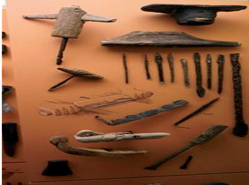
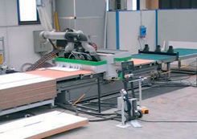
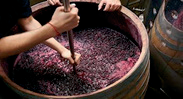
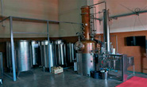
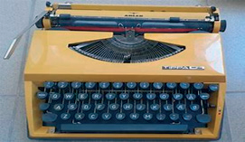

Profesionet tona
Në një panair të profesioneve, ishin paraqitur me fotografi dhe përshkrim profesionet e ndryshme dhe mjetet e tyre.

Zdrukthëtaria është profesion i vjetër. Zdrukthëtarët merreshin me punime druri dhe krijonin gjëra të ndryshme me vegla mjaft të thjeshta.

Sot, druri përpunohet nëpër fabrika me makineri moderne. Për një kohë të shkurtër punohen vegla, dyer, dritare e mobilie për shtëpi e institucione të ndryshme.

Kosova njihet për vreshtat dhe kultivimin e rrushit të tryezës dhe atij të verës. Prodhimi i verës është traditë e vjetër e vendit tonë. I tërë rrushi për verë ndrydhej me këmbë ose me ndonjë shkop.

Në ditët e sotme, vera prodhohet në fabrika bashkëkohore. Shtrydhja e rrushit bëhet me makina e, më pas, të gjitha procedurat deri te mbushja e shisheve shkojnë në linja të veçanta të fabrikës.

Profesioni i gazetarisë mundëson prodhimin dhe shpërndarjen e lajmeve. Mjete pune të gazetarit në të kaluarën ishin: fletorja, lapsi dhe një makinë shkrimi. Mbledhja e informacioneve ishte shumë e vështirë. Me zhvillimin e teknologjisë, u shpikën mjete të ndryshme informacioni, si: telegrafi, radioja, televizori etj., të cilat mundësojnë që mbledhja e informacionit të bëhet më shpejt. Sot, interneti ka mundësuar dërgimin dhe marrjen e menjëhershme të lajmeve në tërë botën.